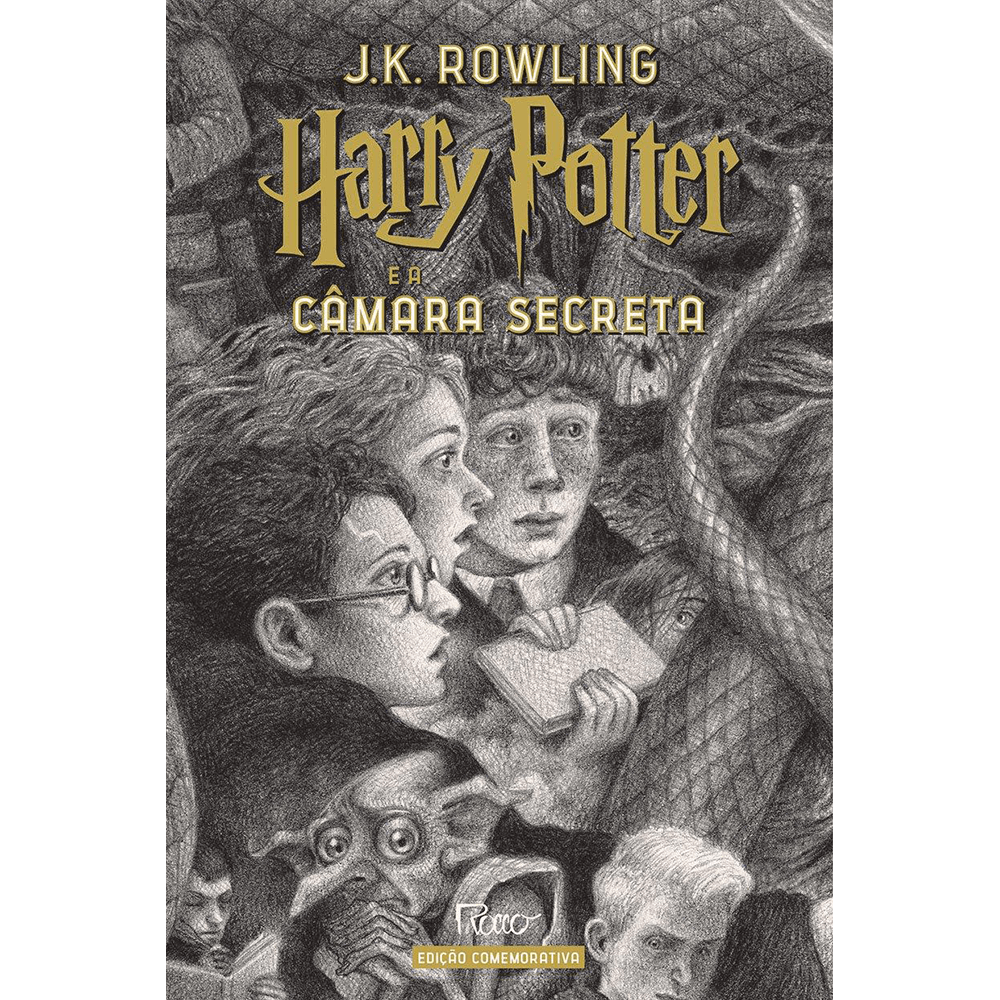
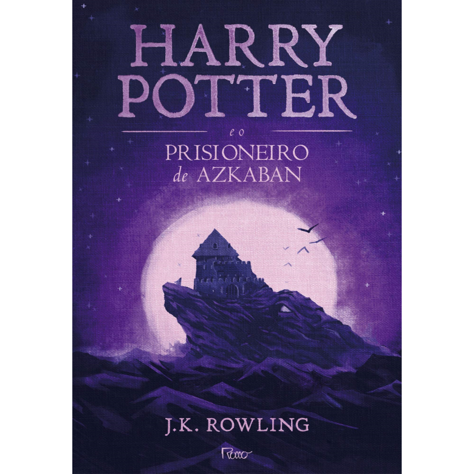
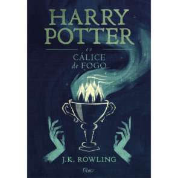
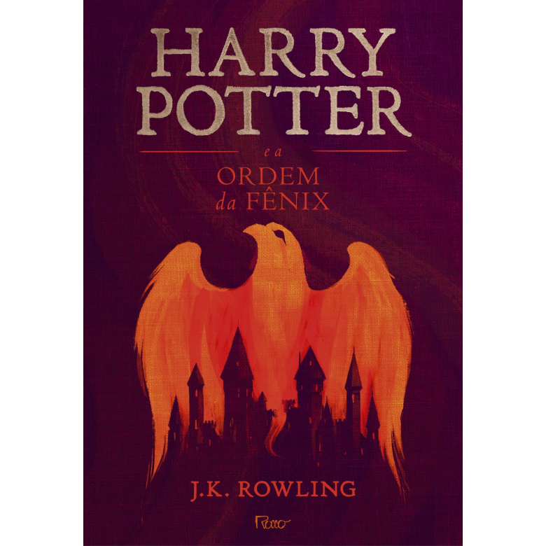
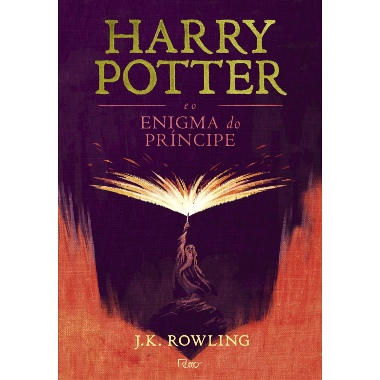
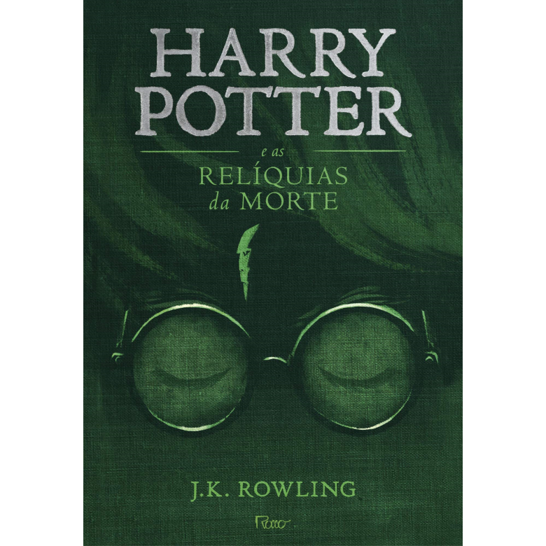

Joanne "Jo" Rowling OBE FRSL, mais conhecida como J. K. Rowling, é uma renomada escritora, roteirista e produtora cinematográfica britânica. Nascida em 31 de julho de 1965 em Yate, Reino Unido, Rowling conquistou reconhecimento mundial por sua famosa série de livros: Harry Potter. Ao longo de sua carreira, Rowling encantou leitores de todas as idades com sua habilidade única de criar um mundo mágico repleto de aventuras, amizade e magia. Com sua imaginação vívida e narrativa envolvente, ela cativou a imaginação de milhões de pessoas ao redor do mundo, tornando-se uma das autoras mais amadas e influentes de todos os tempos.
| Capa | Nome do Livro | Nota Média de Avaliação | Data de Lançamento |
|---|---|---|---|
 |
Harry Potter e a Pedra Filosofal |
4.5/5.0 | 26 de Junho de 1997 |
|  | Harry Potter e a Câmara Secreta |
4.4/5.0 | 2 de Julho de 1998 |
|  | Harry Potter e o Prisioneiro de Azkaban |
4.7/5.0 | 8 de Julho de 1999 |
|  | Harry Potter e o Cálice de Fogo |
4.6/5.0 | 8 de Julho de 2000 |
|  | Harry Potter e a Ordem da Fênix |
4.6/5.0 | 21 de Junho de 2003 |
|  | Harry Potter e o Enigma do Príncipe |
4.6/5.0 | 16 de Julho de 2005 |
|  | Harry Potter e as Relíquias da Morte |
4.7/5.0 | 21 de Julho de 2007 |